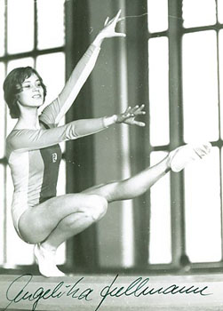

Angelika Hellmann (GDR)
1973 European V Champion
1974 World AA Bronze Medalist

Medal Total
Olympic Games: 1
Silver, 1 Bronze
World Championships: 2 Silver, 1 Bronze
European Championships: 1 Gold, 1 Silver, 1 Bronze
Angelika was born in April 1954
in Halle. Her father was the head of the Sports Department in the SED (East German Communist Party) Central Committee.
She began gymnastics at age 8 and trained at SC Dynamo
Berlin. Her exceptional talent was identified early, and she joined the senior national team at age 15. At her first international meet in 1969, she finished in 6th place and was the third-best member of her team. She competed in two world championships, two European championships, and two Olympic Games. She also won the GDR all-around title twice.
After leaving competitive gymnastics, she stayed involved in the sport and worked as a choreographer at SC Dynamo Berlin.
Competition Results
1964
Pioneer Cup: 1st Team, 2nd AA (Children's Class I)
1965
Werner Seelenbinder Memorial Tournament: 1st AA (Children's Class I)
1966
GDR Children's Spartakiade: 2nd AA, 1st UB, 1st FX, 2nd B
Werner Seelenbinder Memorial Tournament: 6th AA (Youth Class II)
1967
Berlin Championships: 1st AA (Youth Class I)
GDR Youth Championships: 4th AA (Youth Class II)
Werner Seelenbinder Memorial Tournament: 1st AA (Youth Class II)
1968
GDR Youth Spartakiade (Class II): 2nd AA, 2nd UB, 2nd FX, 3rd
B
1969
DTV Cup: 7th AA
Dynamo Spartakiade: 1st Team, 6th AA, 3rd V, 3rd B
GDR Championships: 4th AA
GDR-JPN Dual Meet: 1st Team, 6th AA, 3rd UB
1970
GDR Championships: 4th AA, 3rd V, 4th UB, 4th B, 4th FX
GDR-USSR Dual Meet: 2nd Team, 6th AA, 3rd V
SWE-GDR Dual Meet: 1st Team, 3rd AA
World Championships: 2nd Team, 10th AA, 5th B, 6th V
1971
DTV Cup: 5th AA
Dynamo Spartakiade: 1st Team, 3rd AA, 2nd V, 2nd UB, 2nd FX, 3rd B
European Championships: 6th AA, 3rd UB, 6th B
GDR Championships: 2nd AA, 3rd UB, 5th B, 6th V
1972
GDR Championships: 3rd AA, 3rd FX, 4th V, 5th UB, 5th B
NOR-GDR Dual Meet: 1st Team, 5th AA
Olympics: 2nd Team, 6th AA, 6th UB, 6th FX
SWE-GDR Dual Meet: 1st Team, 2nd AA
1973
Chunichi Cup: 2nd AA
European Championships: 5th AA, 1st V, 2nd UB, 4th FX
GDR Championships: 1st AA, 1st UB, 2nd V, 2nd B, 2nd FX
GDR-USSR Dual Meet: 1st V
London International: 2nd AA
Tokyo Cup: 4th AA
USSR-GDR-CSSR: 2nd Team, 4th AA, 1st V, 3rd UB, 3rd FX
1974
Berlin-Leipzig-Halle-Rostock Meet: 1st Team, 1st AA
GDR Championships: 1st AA, 1st FX, 2nd V, 2nd UB, 3rd B
GDR-JPN Dual Meet: 1st Team, 2nd AA
GDR-USSR-CSSR Meet: 2nd Team, 1st AA, 1st V, 1st UB, 1st B, 1st FX
Milk Meet: 1st AA
World Championships: 2nd Team, 3rd AA, 4th UB, 5th V, 6th FX
1975
DTV Cup: 3rd AA, 1st FX
1976
CSSR-GDR Dual Meet: 1st Team, 1st AA, 1st B, 2nd UB, 3rd FX
GDR Championships: 5th AA, 2nd B
GDR-HUN Dual Meet: 1st AA
NOR-GDR Dual Meet: 3rd AA
Olympics: 3rd Team, 13th AA (prelims), 5th B
This page was created on December
27, 2000 and was last updated on July 02, 2021.
© Gymn Forum